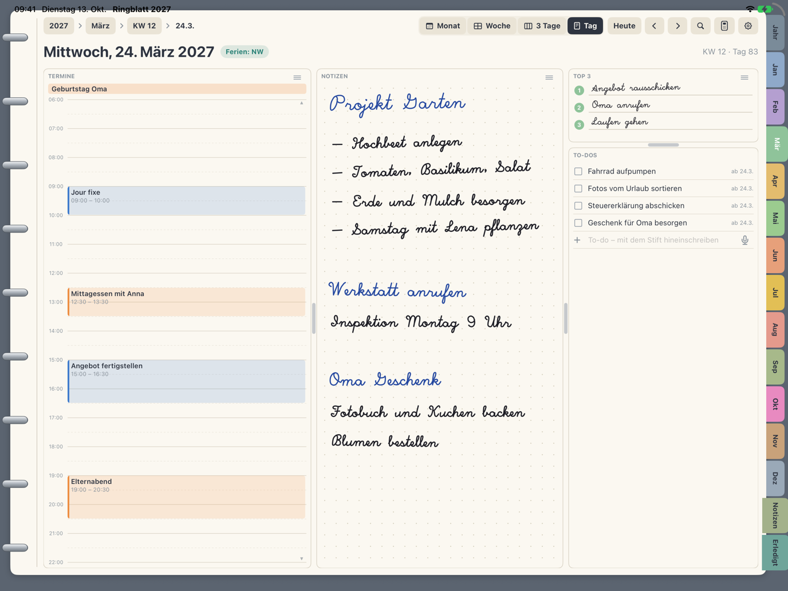

Ringblatt 2027 ist ein Jahresplaner im Stil eines klassischen Ringbuchs, gemacht für iPad und Apple Pencil. Du schreibst mit dem Stift wie auf Papier, deine Termine kommen automatisch aus dem Apple Kalender dazu.

- Jahr, Monat, Woche, drei Tage und Tag mit Registern wie im Ringbuch
- Handschrift mit dem Apple Pencil, Suche auch in der Handschrift
- Termine aus dem Apple Kalender, To-dos aus Apple Erinnerungen
- Kalenderwochen, Feiertage und Schulferien deines Bundeslandes
- Keine Anmeldung, keine Werbung, kein Tracking
- 7 Tage kostenlos testen, danach Einmalkauf. Kein Abo.
Fragen? Schau in den Support.